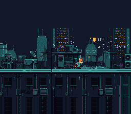

|
OpenSNES
Modern Open-Source SNES Development SDK
|
|
OpenSNES
Modern Open-Source SNES Development SDK
|
A threshold camera over two layers in parallax: Kit runs on the roofs, the far towers follow at half the speed. Hold the D-pad and the world scrolls to follow him.

| Button | Action |
|---|---|
| D-Pad Left/Right | Run |
Then open continuous_scroll.sfc in luna (or any SNES emulator).
This example uses Mode 1 with two background layers: BG1 is the roofs Kit runs on, BG2 the far towers behind them. Both are 512 px wide, so each map is 64x32 entries — two 32x32 pages side by side:
The roofs are 600 distinct tiles (19 KB, $1000-$357F): they are loaded in force blank, before setScreenOn(), far over one VBlank's DMA budget.
Why palette slot 2 and 4? Each BG palette slot holds 16 colors. Slot 0 starts at CGRAM address 0, slot 2 at address 32, slot 4 at address 64. Using different slots means BG1 and BG2 get independent color palettes.
Kit moves freely between two lines of the screen (x 80 and x 140). What he goes past one, the world scrolls instead, and he is put back on the line:
Kit runs right, reaches x 140, and stays there while the roofs go by under him. It looks like the camera is following him, but it's actually the background moving in the opposite direction. At the end of the roofs (MAX_SCROLL_X, 512 − 256) the scroll stops and Kit runs on to the edge of the screen.
The far layer moves at half the speed of the near one:
The difference in speed is the whole depth illusion: the eye reads what moves slower as further away.
Scroll registers are write-only and take effect immediately. If you write them during active display (while the PPU is drawing), you'll get a visible tear – the top half of the screen shows the old scroll position, the bottom half shows the new one.
This example calls bgSetScroll() from the main loop, which does NOT write to the PPU directly. Instead, it stores the new scroll values and sets a dirty flag. The NMI handler (triggered at VBlank) checks the dirty flags and writes the actual scroll registers at a safe time:
The initial scroll values are also set before setScreenOn() so the first visible frame shows the right rows.
Kit is one 32x32 sprite: four idle frames and eight running frames in res/kit.png. A 32x32 frame is 4x4 tiles, and a row of sprite tiles in VRAM is 16 tiles wide, so frame f starts at tile (f % 4) * 4 + (f / 4) * 64. His frames face right; running left sets the attribute's H-flip bit (OBJ_FLIPX).
res/roofs.png is four roof pieces of rooftop_run side by side at one height, res/skyline.png rooftop_run's far towers, and res/kit.png Kit's idle and running frames from his side sheet: all made by devtools/art_assets/build.py from the Néo-Lumen art (PixelLab, CC0; assets/neo-lumen/README.md). The build converts them, from the settings file beside each (opensnes-tileset, opensnes-sprite).
console, sprite, input, background, dma (LIB_MODULES in the Makefile).
| Module | Why it's here |
|---|---|
| console | PPU setup, NMI handler, WaitForVBlank() |
| sprite | OAM buffer for Kit |
| input | padHeld() |
| background | bgSetMapPtr(), bgSetScroll(), bgInitTileSet() with dirty-flag deferred writes |
| dma | dmaCopyVram() for the maps, plus OAM DMA in NMI |
| Register | Address | Role in this example |
|---|---|---|
| BGMODE | $2105 | Mode 1 (two 4bpp layers + one 2bpp) |
| BG1SC | $2107 | BG1 map at $0000, 64x32 |
| BG2SC | $2108 | BG2 map at $0800, 64x32 |
| BG1HOFS | $210D | BG1 horizontal scroll (via bgSetScroll) |
| BG2HOFS | $210F | BG2 horizontal scroll, half of BG1's |
| TM | $212C | Enable OBJ + BG2 + BG1 |
| File | What's in it |
|---|---|
| main.c | The camera, the parallax, Kit's animation |
| res/*.png.toml | the import settings of the two layers and Kit's sheet (opensnes-tileset, opensnes-sprite); the build converts and links them, res/<name>.inc declares the symbols |
| Makefile | LIB_MODULES := console sprite input background dma |